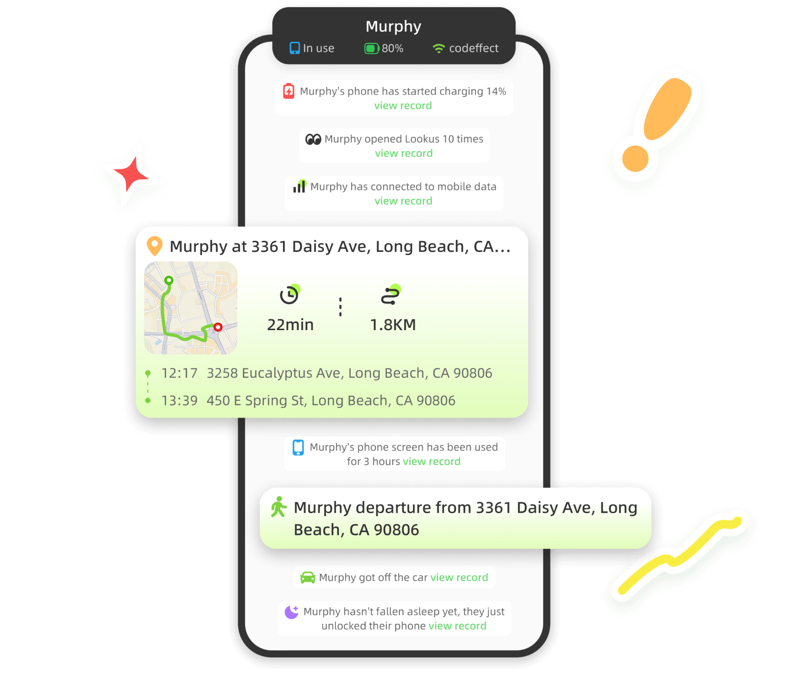
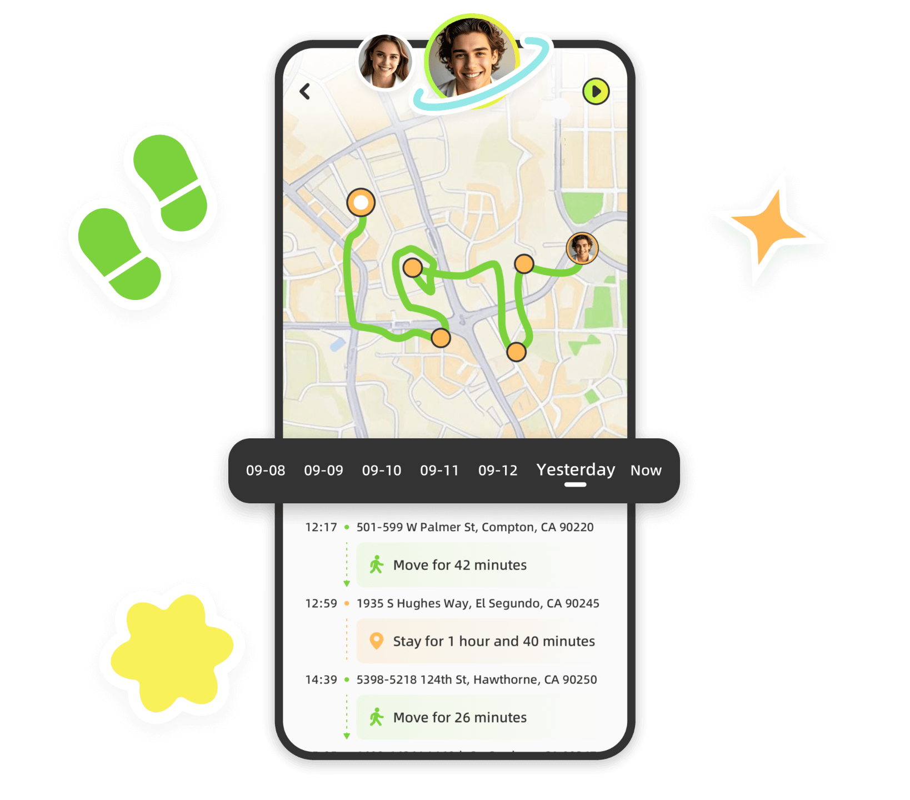

你以为它只是情侣定位？Lookus 藏了 5 个让我拍大腿的隐藏功能
大多数情侣装 Lookus 就是为了看对方在哪。但深挖之后我发现，它藏着停留时长解读、活跃时段围栏、大致位置精度这些官方不宣传的冷门功能——每一个都值得翻一遍设置。
引子：装了半年，我才打开设置页
坦白说我跟大多数人一样——装Lookus的动机很单纯：从官方下载拿包花了三分钟，就是情侣之间有个实时定位，出差、加班、夜不归宿的时候互相安个心。最开始那两周天天刷地图看他走到哪了，后来新鲜感过去，也就睡前瞟一眼电量和位置，App 彻底沦为了一个"看一眼就关"的工具。
直到有天他手机换了，后台权限没配好，连续三天我这边位置都没更新，我还以为他把共享关了闹脾气。结果翻设置排查的时候，顺便去lookus文档翻了一下，发现 Lookus 藏着一堆我从来没碰过的选项——我这才意识到，之前只用了它三成功能。
隐藏功能一：轨迹不只是线，还能反推"他在那待了多久"
轨迹回放我以前就是随手划两下，看看今天走了几条路。但点进任意一天的轨迹详情，下面有个停留时长的统计面板——这个功能藏得真深，入口在轨迹页右上角一个小图标，我从来没注意过。
Lookus 会自动识别停留点：连续几分钟位置变化极小的区域就被标记出来，然后统计每个点的停留时长。这下轨迹从一条毫无信息量的折线，变成了能读懂故事的数据：
- 家的那个蓝色圆点里显示"停留 4 小时 12 分"——哦，今天确实在家休息了一下午
- 公司的红色标记"停留 8 小时 47 分"——比昨天多待了半小时，可能赶项目
- 医院附近那个灰色点"停留 2 小时 03 分"——这个就需要主动问一句了
这个功能最妙的地方是它什么都不说，但什么都说了。不需要对方解释，轨迹数据本身就能提供线索——当然前提是你有正当理由关心，别拿它当查岗工具。

隐藏功能二：活跃时段地点通知——周末终于能睡个懒觉
我之前加了"家""公司""健身房"三个地点围栏，结果周末早上七点他出门买菜我就被推送吵醒了。烦了好一阵，以为这是 Lookus 的设计缺陷，直到翻到地点编辑页最下面——活跃时段。
每个自定义地点都能单独设置"什么时候才发通知"。比如公司我设成"工作日 9:00-20:00"，健身房设成"周二周四 18:00-22:00"，家就全天候。这下周末他出门、加班他晚归、甚至他半夜起夜，我都不会再被无意义的推送轰炸。
关键是这个设置是双向的——他那边给"我家"设了活跃时段，我凌晨出门买夜宵他也收不到通知。谁设谁生效，互不干扰。
还有个小技巧：如果地点通知还是误触发，别第一时间删地点——去设置里把"停留触发时间"从默认的 3 分钟改成 5 分钟，路过的瞬间就不会被当成"到达"了。
隐藏功能三：大致位置——隐私和安心的完美中间态
我之前以为位置共享只有"全开放"和"全关闭"两档。结果 Lookus 在位置精度里给了一个中间选项——大致位置。
精确位置是 GPS 级，误差十米以内，能看到他走到了小区哪栋楼、公司哪个门口。大致位置误差扩大到 100-500 米，只显示大概的区域轮廓——比如"朝阳区望京街道"或者"海淀区中关村附近"，够知道他在哪个方位、有没有到目的地，但不会精确到一举一动。
什么时候用这个最合适？比如一方出差去外地，精确位置能看到酒店具体位置，但如果不想让对方看到酒店门口哪家便利店、哪个酒吧，大致位置就是个不错的选择。再比如刚谈恋爱还没那么熟，不想一开始就暴露精确行踪，但又想让对方知道自己安全到达了——大致位置简直是为这种阶段量身定做的。
而且切换零成本，在"我的 → 隐私与共享 → 位置精度"里滑一下就行，随时换。
隐藏功能四：四种边界组合——别只会全开全关
Lookus 的数据共享是模块化的，位置、电量、屏幕时间、作息状态每一项都能独立开关。我之前只知道"全开"和"全关"，但实际有四种主流组合值得试试：
组合 A（彻底安心）：位置 + 电量 + 屏幕时间全开。适合异地恋、刚在一起想全透明的阶段。代价是你能看到对方一天亮屏多少次、每次亮多久——如果发现对方凌晨三点亮屏 20 分钟，这个信息量有点大。
组合 B（推荐起步）：位置 + 电量开，屏幕时间关。既知道在哪、手机有没有电，又不会看到对方具体在用什么 App、刷了多久短视频。大部分情侣其实停在这个组合最舒服。
组合 C（最低必要）：只开位置。知道对方在哪就够了，其他一概不要。适合已经有足够信任基础、或者一方特别在意隐私的情侣。
组合 D（动态切换）：工作日全开、周末全关；约会时开、见朋友时关。这个最灵活，但需要两个人商量好各自的开关节奏——毕竟他周一早上关了位置，你上班想关心都不知道该怎么开口。
所有开关都能随时改，关了对方那边会显示"伴侣已停止共享"，一目了然，不会有误会。
隐藏功能五：到访频率画像——他常去的地方，自动帮你数
在"地点"页面往下拉，有个"常去地点"的排行榜——Lookus 自动统计你过去一段时间内每个地点的到访次数和总停留时长。
这个功能我是发现他手机里多了一个陌生地点、停留了三天才注意到的。我问他怎么回事，他说在那附近帮朋友搬家。但如果早看这个排行，就能更早发现"为什么最近这个新地点出现频率这么高"——不是怀疑，是主动关心的切入点。
当然，这个画像功能的边界感很重要。它的价值在于"理解"和"安心"，不是用来抓小辫子的。
踩过的坑：安卓后台白名单没配 = App 假装活着
最后说一个我踩过的大坑——Lookus 在安卓上被系统杀后台。
那段时间我连续三天没收到他的位置更新，他那边 App 打开能看到最新状态，但退到后台就再也没动静了。排查下来根本原因是：小米的 MIUI 把 Lookus 归为"非活跃应用"，定时杀掉了它的后台进程。
解决办法很简单但必须按顺序来：电池优化白名单、自启动权限允许、后台锁定加锁。这三个步骤一个都不能少——我只加了白名单没加自启动，重启后 App 还是不会自动拉起。
iOS 用户就没这个烦恼，系统对后台应用友好得多。但如果 iOS 也延迟，大概率是位置权限被设成了"使用应用时"而不是"始终允许"，改回来就好。

收尾：把它用透，而不是只用一层
Lookus 的定位不只是"情侣定位工具"，它藏的这些功能才是真正的差异化竞争力。但大多数人装完就只开了个实时地图，连设置页都没好好翻过。写完这篇我自己也回去把活跃时段设了一遍——终于不用被周末买菜的推送吵醒了。
工具还是那个工具，区别在于你愿不愿意花十分钟翻一遍它的设置。很多人说 App 难用、功能少、没用，但也许只是没挖到它给的那扇门。顺便一提，相关资料在GitHub、Gitee、GitCode三个仓库都能拿到，国内网络访问后两者通常更顺畅。